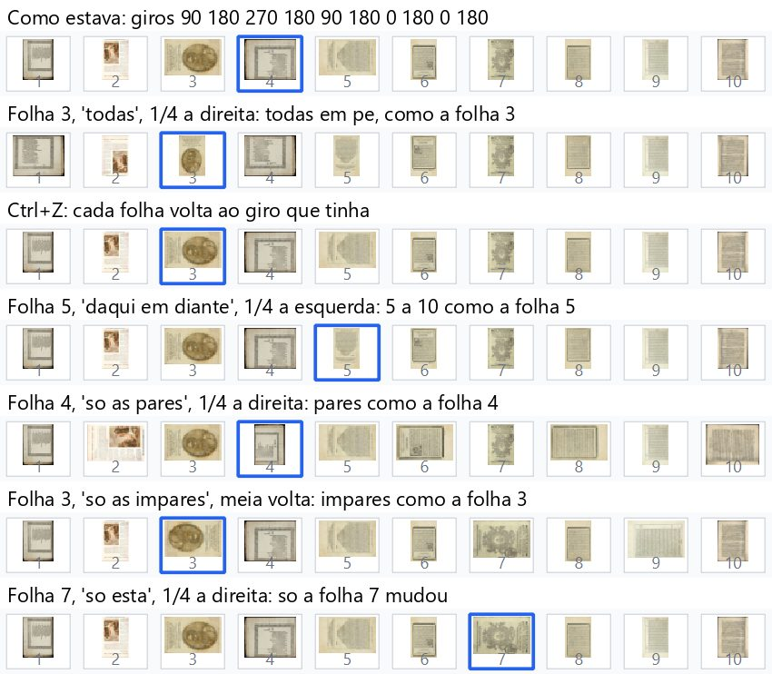
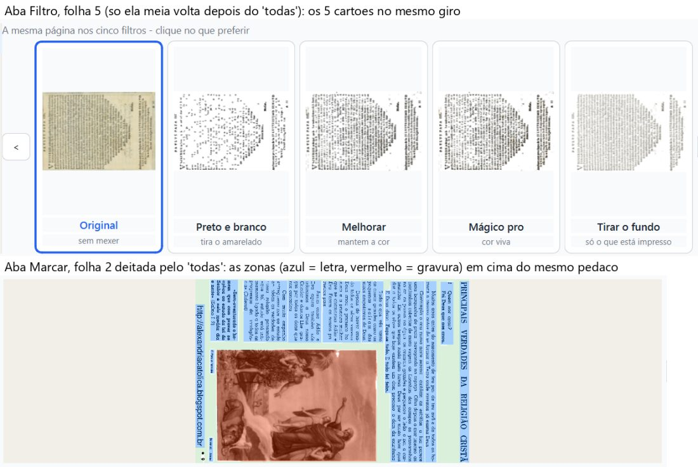
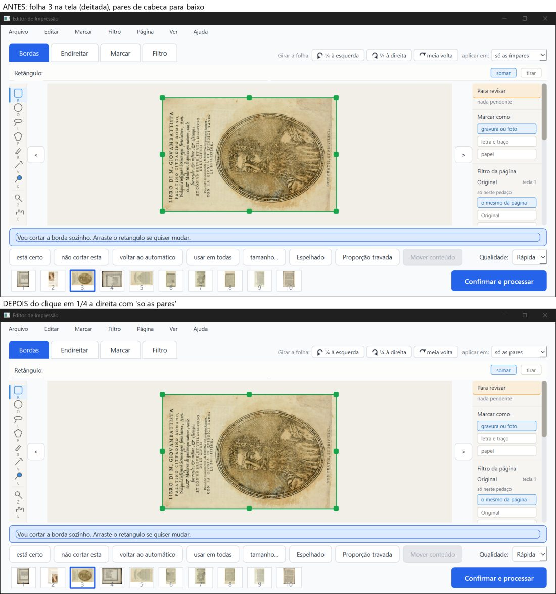
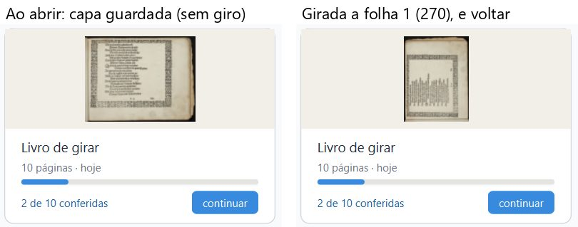
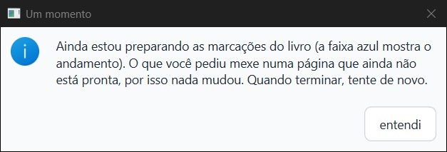
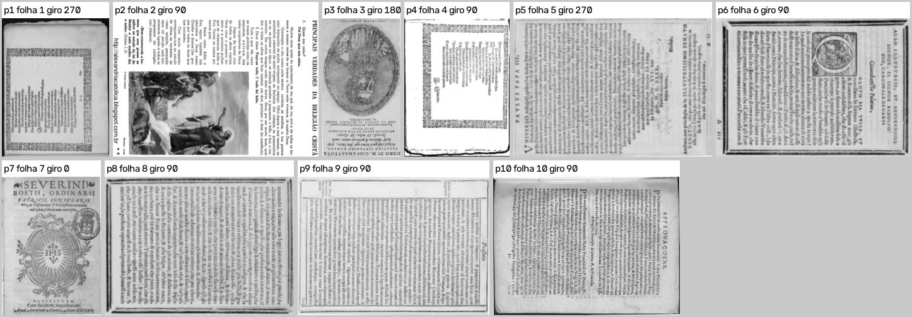

PRONTO PARA JUNTAR, com ressalvas. Os quatro commits fazem o que prometem. Pilotei a janela real, e em todos os casos as folhas escolhidas ficaram viradas como a folha da vez. O Ctrl+Z devolveu cada folha ao giro que ela tinha. A capa do cartão agora aparece girada ao "voltar". O aviso "Um momento" tem o texto novo, em português certo. O PDF saiu idêntico ao do fase-1.
Fica uma pergunta para o Samuel sobre um caso de canto ("só as pares" com uma folha ímpar na tela). Ela vem com imagem, mais abaixo. E também uma frase do histórico que, nesse caso, fica enganosa.
Não é "aprovado": só o Samuel marca.
Defeito conhecido (decisão do Samuel, 28/09): moldura dourada e iluminura continuam sendo defeito conhecido da Fase 1. Estes commits não mexem na imagem das páginas: o PDF saiu igual, pixel a pixel, ao do
fase-1.
O que foi conferido:
girar-aplicar-copia, no commit 9cdc3da;3046cc4, 6e0866d, e971253 e 9cdc3da;fase-1 em 5eee3d8. O fase-1 de hoje (5a90db5) só mudou documentos depois disso.Como foi conferido:
git archive do ramo;| Item | Como | Resultado |
|---|---|---|
| 1. "Aplicar em" copia o giro da folha da vez | janela real + máquina + olho | Bom. Testei 11 giros e 10 desfazer/refazer. Em todos, as folhas escolhidas terminaram no giro final da folha da vez, e as outras não mexeram. Também acompanharam o giro: o disco, as 10 miniaturas, a capa, as 124 zonas marcadas (mesmo pedaço do papel) e os cartões da aba Filtro. São 22 conferências, sem nenhum erro |
| 2. Capa do cartão ao "voltar" | janela real + máquina + olho | Bom. Girei a folha 1 e voltei pelo "voltar" das opções. O cartão mostrou a capa nova na hora. O "continuar" depois disso funcionou |
| 3. Texto novo do aviso "Um momento" | janela real + olho | Bom. O Desfazer, o Refazer e o clique no painel Histórico, feitos durante a conversão das zonas do Boécio, mostraram o texto novo. Nas três vezes, nada mudou no livro. Depois da conversão, o desfazer funcionou |
| 4. PDF | janela real + máquina + olho | Bom. As 10 páginas saíram na ordem certa e no giro pedido. O PDF ficou idêntico, pixel a pixel, ao do fase-1 nas 10 páginas, giradas ou não, e as prévias também ficaram iguais |
| 5. Testes de máquina | máquina | Bom. 95 arquivos de teste, um por vez: 1705 passaram, 59 pularam e 0 falharam. O teste_botoes.py fez 159 ações, com 0 falhas |
Cada linha abaixo é um clique de verdade no botão da barra "Girar a folha", seguido da conferência completa:
projeto.json do disco;capa.png;| Na folha (giro dela) | Aplicar em | Botão | Giros depois (folhas 1 a 10) | Certo? |
|---|---|---|---|---|
| 3 (270) | todas | ¼ à direita | 0 0 0 0 0 0 0 0 0 0 | sim |
| 5 (90) | daqui em diante | ¼ à esquerda | 90 180 270 180 0 0 0 0 0 0 | sim |
| 4 (180) | só as pares | ¼ à direita | 90 270 270 270 90 270 0 270 0 270 | sim |
| 3 (270) | só as ímpares | meia volta | 90 180 90 180 90 180 90 180 90 180 | sim |
| 7 (0) | só esta | ¼ à direita | 90 180 270 180 90 180 90 180 0 180 | sim |
| 3 (270) | só as pares (caso de canto) | ¼ à direita | 90 0 270 0 90 0 90 0 0 0 | como o implementador descreveu, a perguntar |
| 2 (180) | todas | ¼ à esquerda | 90 em todas | sim |
| 5 (90) | só esta, depois do "todas" | meia volta | 90 90 90 90 270 90 90 90 90 90 | sim |
| 1 (90) | só esta | meia volta | 270 90 … (capa.png refeita a 270) | sim |
Resultado dos testes:
capa.png só mudou quando a folha 1 mudou de giro: no "todas" (a 0), no desfazer (de volta a 90) e no "só esta" da folha 1 (a 270). Quando outras folhas giraram, ela não mudou.
Olhando a tira, linha por linha:

Cartões da aba Filtro:

O que acontece hoje:
Uma frase fica enganosa: o histórico e o menu dizem "Girar ¼ à direita: as 5 folhas pares, viradas como a folha 3". Mas as pares não ficaram como a folha 3: ela continua deitada e elas ficaram em pé. A dica do "aplicar em" ("Todas ficam viradas como esta folha") também não vale neste caso.
Pergunta sugerida ao Samuel: "Se você está numa folha ímpar e escolhe 'só as pares', o que o botão de girar deve fazer?"

O caminho testado:
O resultado:

O teste: usei o Boécio antigo (50 páginas, zonas de antes de 05/10) com um histórico de "outra sessão": duas ações feitas e uma desfeita, todas no ângulo da página 46. Fiz três rodadas, cada uma com uma cópia nova do Boécio, e agi logo ao entrar, com 48 páginas ainda por converter:
| O que foi feito | Aviso | O livro mudou? |
|---|---|---|
| Editar → Desfazer | "Um momento", texto novo | não |
| Editar → Refazer | "Um momento", texto novo | não |
| clique no 1º item do painel Histórico | "Um momento", texto novo | não |
| Desfazer depois da conversão (cerca de 20 s) | nenhum | sim, desfez (ângulo 1,5 → 0) |
O texto, conferido no print: "Ainda estou preparando as marcações do livro (a faixa azul mostra o andamento). O que você pediu mexe numa página que ainda não está pronta, por isso nada mudou. Quando terminar, tente de novo."
Como foi feito: girei as folhas para 270 90 180 90 270 90 0 90 90 90 e processei pela janela (Confirmar e processar → "processar assim mesmo" → Processar). A tela final apareceu em 8,5 s. A maior parada da janela foi de 0,59 s.
O que foi conferido:
fase-1:fase-1 (5eee3d8);
Não ficou mais lento.
core/pipeline e os filtros não usam core/girar.py. O PDF saiu idêntico.fase-1: mediana de 10,3 s;teste_velocidade.py oficial: com o processamento idêntico, ele mediria só a variação do PC.pytest, um arquivo por vez (95 arquivos): 1705 passaram, 59 pularam, 0 falharam.
test_girar.py: 41 passaram;test_girar_cartoes_e_previas.py: 24 passaram;test_girar_na_tela.py: 20 passaram;test_misto_na_tela.py: rodou 6 vezes (o arquivo em que o implementador viu a queda), com 14 passaram nas 6. Nenhum "access violation".teste_botoes.py: 159 ações, 0 falhas.
git archive do 9cdc3da, com saida_teste própria.| Onde | Vezes |
|---|---|
pytest (100 rodadas de arquivo, contando as 6 do test_misto_na_tela.py) |
0 |
teste_botoes.py |
0 |
| janela real (7 sessões abertas e fechadas) | 2 |
As 2 vezes na janela real:
Nos dois casos:
erros.log ficou vazio.Já existia antes: é o mesmo problema que o verificador-3 registrou no 89fae91: 2 em 11 fechamentos, e 33 registros desde 05/10. Não vi nada que ligue isto ao lambda do 9cdc3da. As duas vezes foram no Boécio, e não no livro em que usei o "voltar" das opções.
posicao.json diz 21 ações feitas, mas o arquivo tem 30). É o defeito do fase-1 já anotado pelo verificador-3. Ele não atrapalhou os testes, porque todo Ctrl+Z foi feito logo depois do meu próprio giro.
- A primeira tentativa de Ctrl+Z da sessão não chegou ao programa: a lista do "aplicar em" tinha ficado aberta e pegou a tecla. Nada mudou no livro. Mesmo assim, recomecei do zero, só por cuidado.relatorios/conferir/girar-aplicar-copia-2026-10-06/parecer-girar-aplicar-copia.html (também em .md e .pdf).imagens/.prints/ (fora do git).trabalho/girar.log;trabalho/pytest_girar.log e trabalho/pytest_resto.log;trabalho/teste_botoes.log;trabalho/velocidade_intercalada.txt.scripts/):cenario.py: girar, desfazer e refazer, com a conferência completa;cartoes.py: cartões e aba Marcar;boecio_aviso.py e boecio_um.py: o aviso;pdf_conferir.py e comparar_pdfs.py: o PDF;imagens_parecer.py: as imagens do parecer.Editor de Impressão · gerado em 06/10/2026 às 15:52